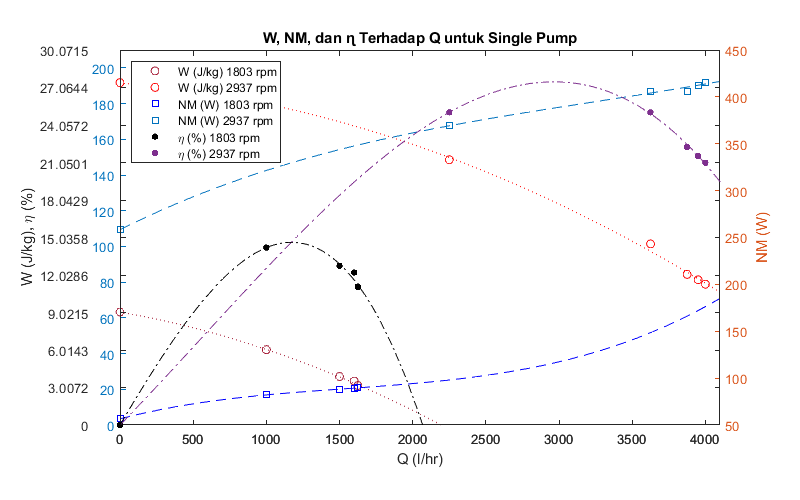
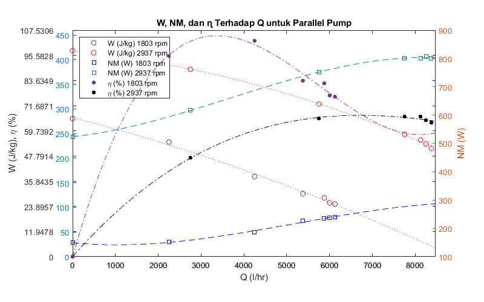
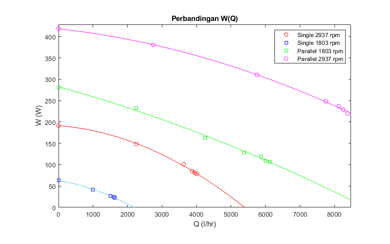
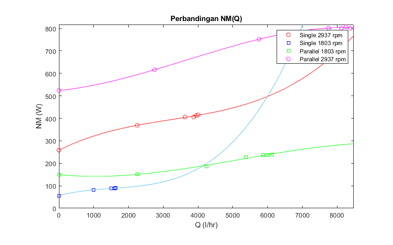
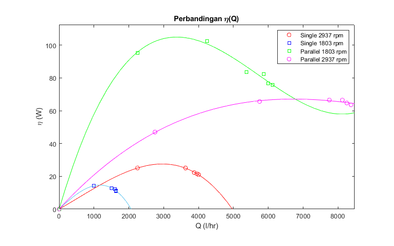

clc
close all
clear all
format compact
format short e
g = 9.80665;
T = 27;
rho = interp1([25 30],[997.08 995.68],T);
gamma = g*rho;
single2 = table2array(readtable('Single2937.xlsx'));
Bukaan2 = single2(:,1);
n2 = single2(:,2);
P12 = single2(:,3);
P22 = single2(:,4);
Q2 = single2(:,5);
Torsi2 = single2(:,6);
z = 0.21;
H2 = (P22-P12).*100000./gamma+z;
W2 = H2.*g;
NH2 = gamma.*Q2./3600./1000.*H2;
NM2 = n2.*pi().*Torsi2./30;
eta2 = NH2./NM2.*100;
Tabel2 = table(Bukaan2,H2,W2,NH2,NM2,eta2)
TrendlineW2 = polyfit(Q2,W2,2)
TrendlineNM2 = polyfit(Q2,NM2,3)
Trendlineeta2 = polyfit(Q2,eta2,3)
etaa2 = polyder(Trendlineeta2);
etamax2 = roots(etaa2)
NilaiAkhir2 = polyval(Trendlineeta2,etamax2)
single = table2array(readtable('Single.xlsx'));
Bukaan = single(:,1);
n = single(:,2);
P1 = single(:,3);
P2 = single(:,4);
Q = single(:,5);
Torsi = single(:,6);
z = 0.21;
H = (P2-P1).*100000./gamma+z;
W = H.*g;
NH = gamma.*Q./3600./1000.*H;
NM = n.*pi().*Torsi./30;
eta = NH./NM.*100;
Tabel = table(Bukaan,H,W,NH,NM,eta)
TrendlineW = polyfit(Q,W,2)
TrendlineNM = polyfit(Q,NM,3)
Trendlineeta = polyfit(Q,eta,3)
etaa = polyder(Trendlineeta);
etamax = roots(etaa)
NilaiAkhir = polyval(Trendlineeta,etamax)
f= figure;
set(gcf, 'Position', [100, 100, 800, 500])
ax1 = axes;
yyaxis left
satu2 = plot(Q2,W2,'o','Color','r');
hold on
set(gca,'Position',[0.15 0.15 0.75 0.75])
pause(0.1)
ax1.XTickMode = 'manual';
ax1.YTickMode = 'auto';
ax1.YLim = [0, max(ax1.YTick)+10];
ax1.XLim = [0 max(Q2)+100];
ax1.XLimMode = 'manual';
satu = plot(Q,W,'o','Color','[0.6350 0.0780 0.1840]');
satua = fplot(poly2sym(TrendlineW),ax1.XLim,':','Color','[0.6350 0.0780 0.1840]');
satua2 = fplot(poly2sym(TrendlineW2),ax1.XLim,':','Color','r');
grid(ax1,'off')
ytick = ax1.YTick;
yyaxis right
ylabel('NM (W)')
dua = plot(Q,NM,'square','Color','b');
duaa = fplot(poly2sym(TrendlineNM),ax1.XLim,'--','Color','b');
dua2 = plot(Q2,NM2,'square','Color','[0 0.4470 0.7410]');
duaa2 = fplot(poly2sym(TrendlineNM2),ax1.XLim,'--','Color','[0 0.4470 0.7410]');
ax2 = axes('position', ax1.Position);
tiga2 = plot(ax2,Q2,eta2, '.','MarkerSize',12,'Color','[0.4940 0.1840 0.5560] ');
hold on
tiga = plot(ax2,Q,eta, '.','MarkerSize',12,'Color','k');
tigaa2 = fplot(poly2sym(Trendlineeta2),ax1.XLim,'-.','Color','[0.4940 0.1840 0.5560] ');
tigaa = fplot(poly2sym(Trendlineeta),ax1.XLim,'-.','Color','k');
hold off
pause(0.1)
ax2.Color = 'none';
grid(ax2, 'off')
ax2.XLim = ax1.XLim;
ax2.XTick = ax1.XTick;
ax2.YLim = [0 max(eta2)+5];
ax2.YLimMode = 'manual';
yl = ax2.YLim;
ax2.YTick = linspace(yl(1), yl(2), length(ytick));
ax2.YTickLabel = strcat(ax2.YTickLabel, {' '});
lgd = legend([satu satu2 dua dua2 tiga tiga2],'W (J/kg) 1803 rpm','W (J/kg) 2937 rpm','NM (W) 1803 rpm','NM (W) 2937 rpm','\eta (%) 1803 rpm','\eta (%) 2937 rpm');
lgd.Location = 'northwest';
title('W, NM, dan ɳ Terhadap Q untuk Single Pump')
xlabel('Q (l/hr)')
ylabel('W (J/kg), \eta (%)')
hold off
Warning: Column headers from the file were modified to make them valid MATLAB
identifiers before creating variable names for the table. The original column
headers are saved in the VariableDescriptions property.
Set 'VariableNamingRule' to 'preserve' to use the original column headers as
table variable names.
Tabel2 =
7×6 table
Bukaan2 H2 W2 NH2 NM2 eta2
__________ __________ __________ __________ __________ __________
1.0000e+00 8.0381e+00 7.8827e+01 8.7280e+01 4.1521e+02 2.1021e+01
2.0000e+00 8.0381e+00 7.8827e+01 8.7280e+01 4.1521e+02 2.1021e+01
3.0000e+00 8.2939e+00 8.1335e+01 8.8932e+01 4.1213e+02 2.1579e+01
4.0000e+00 8.6009e+00 8.4346e+01 9.0473e+01 4.0598e+02 2.2285e+01
5.0000e+00 1.0340e+01 1.0141e+02 1.0175e+02 4.0598e+02 2.5064e+01
6.0000e+00 1.5150e+01 1.4857e+02 9.2533e+01 3.6907e+02 2.5072e+01
7.0000e+00 1.9550e+01 1.9172e+02 0.0000e+00 2.5835e+02 0.0000e+00
TrendlineW2 =
-5.4148e-06 -6.3581e-03 1.9152e+02
TrendlineNM2 =
1.7188e-09 -1.6688e-05 7.8106e-02 2.5834e+02
Trendlineeta2 =
-7.4554e-10 1.2829e-06 1.2033e-02 -3.7108e-04
etamax2 =
2.9629e+03
-1.8158e+03
NilaiAkhir2 =
2.7523e+01
-1.3157e+01
Warning: Column headers from the file were modified to make them valid MATLAB
identifiers before creating variable names for the table. The original column
headers are saved in the VariableDescriptions property.
Set 'VariableNamingRule' to 'preserve' to use the original column headers as
table variable names.
Tabel =
7×6 table
Bukaan H W NH NM eta
__________ __________ __________ __________ __________ __________
1.0000e+00 2.2566e+00 2.2129e+01 9.9541e+00 8.9824e+01 1.1082e+01
2.0000e+00 2.2566e+00 2.2129e+01 9.9541e+00 8.9635e+01 1.1105e+01
3.0000e+00 2.2566e+00 2.2129e+01 9.9541e+00 8.9635e+01 1.1105e+01
4.0000e+00 2.5124e+00 2.4638e+01 1.0912e+01 8.9257e+01 1.2225e+01
5.0000e+00 2.7682e+00 2.7147e+01 1.1272e+01 8.8314e+01 1.2763e+01
6.0000e+00 4.3031e+00 4.2199e+01 1.1681e+01 8.2087e+01 1.4230e+01
7.0000e+00 6.4520e+00 6.3272e+01 0.0000e+00 5.6611e+01 0.0000e+00
TrendlineW =
-6.6096e-06 -1.4302e-02 6.3253e+01
TrendlineNM =
4.0814e-09 -1.8932e-05 4.0327e-02 5.6611e+01
Trendlineeta =
-3.6598e-09 -2.0746e-06 1.9957e-02 3.6663e-04
etamax =
-1.5503e+03
1.1724e+03
NilaiAkhir =
-2.2288e+01
1.4648e+01

parallel4 = table2array(readtable('Parallel2937.xlsx'));
Bukaan4 = parallel4(:,1);
n14 = parallel4(:,2);
n24 = parallel4(:,3);
P14 = parallel4(:,4);
P24 = parallel4(:,5);
P34 = parallel4(:,6);
Q4 = parallel4(:,7);
Torsi4 = parallel4(:,8);
z = 0.21;
H14 = (P24-P14).*100000./gamma+z;
H24 = (P34-P14).*100000./gamma+z;
H4 = H14+H24;
W4 = H4.*g;
NH4 = gamma.*Q4./3600./1000.*H4;
NM14 = n14.*pi().*Torsi4./30;
NM24 = n24.*pi().*Torsi4./30;
NM4 = NM14+NM24;
eta4 = NH4./NM4.*100;
Tabel4 = table(Bukaan4,H4,W4,NH4,NM4,eta4)
TrendlineW4 = polyfit(Q4,W4,2)
TrendlineNM4 = polyfit(Q4,NM4,3)
Trendlineeta4 = polyfit(Q4,eta4,3)
etaa4 = polyder(Trendlineeta4);
etamax4 = roots(etaa4)
NilaiAkhir4 = polyval(Trendlineeta4,etamax4)
parallel3 = table2array(readtable('Parallel.xlsx'));
Bukaan3 = parallel3(:,1);
n13 = parallel3(:,2);
n23 = parallel3(:,3);
P13 = parallel3(:,4);
P23 = parallel3(:,5);
P33 = parallel3(:,6);
Q3 = parallel3(:,7);
Torsi3 = parallel3(:,8);
z = 0.21;
H13 = (P23-P13).*100000./gamma+z;
H23 = (P33-P13).*100000./gamma+z;
H3 = H13+H23;
W3 = H3.*g;
NH3 = gamma.*Q3./3600./1000.*H3;
NM13 = n13.*pi().*Torsi3./30;
NM23 = n23.*pi().*Torsi3./30;
NM3 = NM13+NM23;
eta3 = NH3./NM3.*100;
Tabel3 = table(Bukaan3,H3,W3,NH3,NM3,eta3)
TrendlineW3 = polyfit(Q3,W3,2)
TrendlineNM3 = polyfit(Q3,NM3,3)
Trendlineeta3 = polyfit(Q3,eta3,3)
etaa3 = polyder(Trendlineeta3);
etamax3 = roots(etaa3)
NilaiAkhir3 = polyval(Trendlineeta3,etamax3)
f= figure;
set(gcf, 'Position', [100, 100, 800, 500])
ax1 = axes;
yyaxis left
satu = plot(Q4,W4,'o','Color','r');
hold on
set(gca,'Position',[0.15 0.15 0.75 0.75])
satu3 = plot(Q3,W3,'o','Color','[0.6350 0.0780 0.1840]');
pause(0.1)
ax1.XTickMode = 'manual';
ax1.YTickMode = 'auto';
ax1.YLim = [0, max(ax1.YTick)+10];
ax1.XLim = [0 max(Q4)+100];
ax1.XLimMode = 'manual';
satua = fplot(poly2sym(TrendlineW4),ax1.XLim,':','Color','r');
satua3 = fplot(poly2sym(TrendlineW3),ax1.XLim,':','Color','[0.6350 0.0780 0.1840]');
grid(ax1,'off')
ytick = ax1.YTick;
yyaxis right
ylabel('NM (W)')
dua3 = plot(Q3,NM3,'square','Color','b');
duaa3 = fplot(poly2sym(TrendlineNM3),ax1.XLim,'--','Color','b');
dua = plot(Q4,NM4,'square','Color','[0 0.4470 0.7410]');
duaa = fplot(poly2sym(TrendlineNM4),ax1.XLim,'--','Color','[0 0.4470 0.7410]');
ax2 = axes('position', ax1.Position);
tiga = plot(ax2,Q4,eta4, '.','MarkerSize',12,'Color','k');
hold on
tiga3 = plot(ax2,Q3,eta3, '.','MarkerSize',12,'Color','[0.4940 0.1840 0.5560]');
tigaa = fplot(poly2sym(Trendlineeta4),ax1.XLim,'-.','Color','k');
tigaa3 = fplot(poly2sym(Trendlineeta3),ax1.XLim,'-.','Color','[0.4940 0.1840 0.5560]');
hold off
pause(0.1)
ax2.Color = 'none';
grid(ax2, 'off')
ax2.XLim = ax1.XLim;
ax2.XTick = ax1.XTick;
ax2.YLim = [0 max(eta3)+5];
ax2.YLimMode = 'manual';
yl = ax2.YLim;
ax2.YTick = linspace(yl(1), yl(2), length(ytick));
ax2.YTickLabel = strcat(ax2.YTickLabel, {' '});
lgd = legend([satu3 satu dua3 dua tiga3 tiga],'W (J/kg) 1803 rpm','W (J/kg) 2937 rpm','NM (W) 1803 rpm','NM (W) 2937 rpm','\eta (%) 1803 rpm','\eta (%) 2937 rpm');
lgd.Location = 'northwest';
title('W, NM, dan ɳ Terhadap Q untuk Parallel Pump')
xlabel('Q (l/hr)')
ylabel('W (J/kg), \eta (%)')
hold off
Warning: Column headers from the file were modified to make them valid MATLAB
identifiers before creating variable names for the table. The original column
headers are saved in the VariableDescriptions property.
Set 'VariableNamingRule' to 'preserve' to use the original column headers as
table variable names.
Tabel4 =
7×6 table
Bukaan4 H4 W4 NH4 NM4 eta4
__________ __________ __________ __________ __________ __________
1.0000e+00 2.2420e+01 2.1987e+02 5.0972e+02 8.0143e+02 6.3602e+01
2.0000e+00 2.3341e+01 2.2890e+02 5.2274e+02 8.0760e+02 6.4728e+01
3.0000e+00 2.4160e+01 2.3693e+02 5.3287e+02 8.0143e+02 6.6490e+01
4.0000e+00 2.5337e+01 2.4847e+02 5.3304e+02 8.0143e+02 6.6511e+01
5.0000e+00 3.1630e+01 3.1018e+02 4.9371e+02 7.5211e+02 6.5643e+01
6.0000e+00 3.8793e+01 3.8043e+02 2.8959e+02 6.1649e+02 4.6975e+01
7.0000e+00 4.2681e+01 4.1856e+02 0.0000e+00 5.2401e+02 0.0000e+00
TrendlineW4 =
-1.6991e-06 -8.9474e-03 4.1832e+02
TrendlineNM4 =
-7.8349e-10 8.6625e-06 1.5746e-02 5.2400e+02
Trendlineeta4 =
7.0231e-11 -2.4315e-06 2.3150e-02 4.4768e-02
etamax4 =
1.6368e+04
6.7127e+03
NilaiAkhir4 =
3.5511e+01
6.7123e+01
Warning: Column headers from the file were modified to make them valid MATLAB
identifiers before creating variable names for the table. The original column
headers are saved in the VariableDescriptions property.
Set 'VariableNamingRule' to 'preserve' to use the original column headers as
table variable names.
Tabel3 =
7×6 table
Bukaan3 H3 W3 NH3 NM3 eta3
__________ __________ __________ __________ __________ __________
1.0000e+00 1.0909e+01 1.0698e+02 1.8138e+02 2.3891e+02 7.5917e+01
2.0000e+00 1.1164e+01 1.0949e+02 1.8184e+02 2.3742e+02 7.6591e+01
3.0000e+00 1.2188e+01 1.1952e+02 1.9437e+02 2.3593e+02 8.2387e+01
4.0000e+00 1.3057e+01 1.2805e+02 1.9052e+02 2.2796e+02 8.3576e+01
5.0000e+00 1.6588e+01 1.6267e+02 1.9137e+02 1.8665e+02 1.0253e+02
6.0000e+00 2.3751e+01 2.3292e+02 1.4507e+02 1.5231e+02 9.5246e+01
7.0000e+00 2.8611e+01 2.8058e+02 0.0000e+00 1.4932e+02 0.0000e+00
TrendlineW3 =
-1.0512e-06 -2.2386e-02 2.8246e+02
TrendlineNM3 =
-5.2184e-10 8.1273e-06 -1.5199e-02 1.4961e+02
Trendlineeta3 =
8.8029e-10 -1.5171e-05 7.2291e-02 -9.0784e-02
etamax3 =
8.1166e+03
3.3726e+03
NilaiAkhir3 =
5.7934e+01
1.0493e+02

figure
set(gcf, 'Position', [100, 100, 800, 500])
plot(Q2,W2,'o','DisplayName','Single 2937 rpm','Color','r');
hold on
set(gca,'Position',[0.15 0.15 0.75 0.75])
plot(Q,W,'square','DisplayName','Single 1803 rpm','Color','b');
plot(Q3,W3,'square','DisplayName','Parallel 1803 rpm','Color','g');
plot(Q4,W4,'o','DisplayName','Parallel 2937 rpm','Color','m');
fplot(poly2sym(TrendlineW2),'r');
fplot(poly2sym(TrendlineW)),'b';
fplot(poly2sym(TrendlineW3),'g');
fplot(poly2sym(TrendlineW4),'m')
hold off
title('Perbandingan W(Q)')
xlabel('Q (l/hr)')
ylabel('W (W)')
xlim([0 max(Q4)+100])
ylim([0 max(W4)+10])
legend('Single 2937 rpm','Single 1803 rpm','Parallel 1803 rpm','Parallel 2937 rpm')

figure
set(gcf, 'Position', [100, 100, 800, 500])
plot(Q2,NM2,'o','DisplayName','Single 2937 rpm','Color','r');
hold on
set(gca,'Position',[0.15 0.15 0.75 0.75])
plot(Q,NM,'square','DisplayName','Single 1803 rpm','Color','b');
plot(Q3,NM3,'square','DisplayName','Parallel 1803 rpm','Color','g');
plot(Q4,NM4,'o','DisplayName','Parallel 2937 rpm','Color','m');
fplot(poly2sym(TrendlineNM2),'r');
fplot(poly2sym(TrendlineNM)),'b';
fplot(poly2sym(TrendlineNM3),'g');
fplot(poly2sym(TrendlineNM4),'m')
hold off
title('Perbandingan NM(Q)')
xlabel('Q (l/hr)')
ylabel('NM (W)')
xlim([0 max(Q4)+100])
ylim([0 max(NM4)+10])
legend('Single 2937 rpm','Single 1803 rpm','Parallel 1803 rpm','Parallel 2937 rpm')

figure
set(gcf, 'Position', [100, 100, 800, 500])
plot(Q2,eta2,'o','DisplayName','Single 2937 rpm','Color','r');
hold on
set(gca,'Position',[0.15 0.15 0.75 0.75])
plot(Q,eta,'square','DisplayName','Single 1803 rpm','Color','b');
plot(Q3,eta3,'square','DisplayName','Parallel 1803 rpm','Color','g');
plot(Q4,eta4,'o','DisplayName','Parallel 2937 rpm','Color','m');
fplot(poly2sym(Trendlineeta2),'r');
fplot(poly2sym(Trendlineeta)),'b';
fplot(poly2sym(Trendlineeta3),'g');
fplot(poly2sym(Trendlineeta4),'m')
hold off
title('Perbandingan \eta(Q)')
xlabel('Q (l/hr)')
ylabel('\eta (W)')
xlim([0 max(Q4)+100])
ylim([0 max(eta3)+10])
legend('Single 2937 rpm','Single 1803 rpm','Parallel 1803 rpm','Parallel 2937 rpm')
